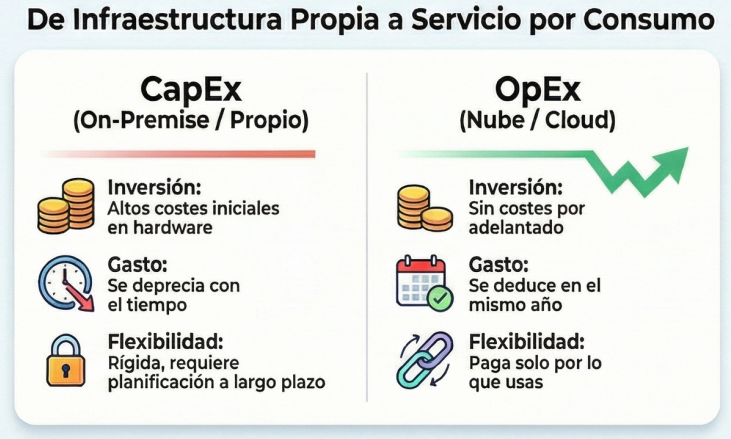
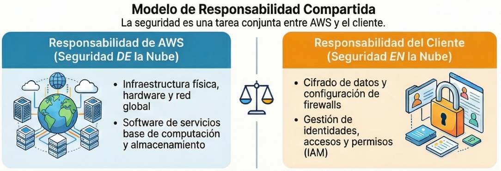

PRESENTACIÓN DOCENTE: CIBERATAQUE AL AYUNTAMIENTO DE ELCHE
Migración segura a AWS para gobernanza municipal
ÍNDICE DE CONTENIDOS
- El caso real: Ciberataque ransomware en Elche (agosto 2025)
- Teoría Cloud: On-premise vs AWS
- Servicios AWS: EC2, Lambda, S3, RDS, IAM, WAF, Shield
- Arquitectura anti-ransomware: 6 capas de protección
- Actividades grupales: Fases A, B, C
- Solución técnica recomendada
- Rúbrica de evaluación
1. EL CASO REAL - HECHOS DEL CIBERATAQUE
Ciberataque a Elche - Agosto 2025
| ASPECTO | IMPACTO |
|---|---|
| Qué se cifró | Todos los servidores municipales |
| Servicios afectados | Sede electrónica, padrón, tributos, cita previa, correo |
| Las copias de seguridad | ¡TAMBIÉN CIFRADAS! (estaban en el mismo CPD) |
| Tiempo caído | Semanas de interrupción completa |
| Pérdidas | Daño reputacional, desconfianza ciudadana |
| Lección clave | Un único CPD = punto único de fallo catastrófico |
¿Qué falló en la infraestructura on-premise?
| FALLO | EXPLICACIÓN | IMPACTO |
|---|---|---|
| Backups locales | Las copias en el mismo edificio | Ransomware las cifró también |
| Sin redundancia geográfica | Si el CPD cae, todo se pierde | Recuperación imposible |
| Recuperación lenta | Procedimientos manuales | Semanas sin servicio |
| Sin monitoreo centralizado | Difícil detectar intrusión | Ataque se propagó sin freno |
| Escalabilidad limitada | No crece en picos (impuestos, elecciones) | Ciudadanía sin servicio crítico |
2. CONCEPTOS CLOUD: ON-PREMISE VS AWS
Comparativa fundamental

| CONCEPTO | ON-PREMISE | CLOUD (AWS) |
|---|---|---|
| Inversión | CapEx (dinero por adelantado) | OpEx (pago mensual por uso) |
| Escalabilidad | Lenta (comprar hardware) | Inmediata (minutos) |
| Mantenimiento | Tu responsabilidad total | AWS mantiene el hardware |
| Disponibilidad | Limitada a 1 CPD | Múltiples zonas geográficas |
| Backup externo | Complejo y caro | Automático y económico |
| Recuperación DR | Difícil (tarda semanas) | Rápida (horas/minutos) |
Analogía clave: On-premise es tener tu propia central eléctrica. Cloud es enchufarte a la red eléctrica y pagar solo lo que consumes. 
Modelos de servicio: IaaS, PaaS, SaaS

| MODELO | EJEMPLO AWS | QUÉ TÚ CONTROLAS | VENTAJA |
|---|---|---|---|
| IaaS (Infraestructura) | EC2 | SO, aplicaciones, datos | Máxima flexibilidad |
| PaaS (Plataforma) | RDS | Solo código y datos | Menos mantenimiento |
| SaaS (Software) | Office 365 | Solo datos | Listo para usar |
Modelo de responsabilidad compartida AWS
"AWS protege LA NUBE. TÚ proteges LO QUE PONES EN LA NUBE." 
Principio de mínimo privilegio
AWS es responsable de:
- ✅ Seguridad física de centros de datos (vigilancia 24/7)
- ✅ Hardware (servidores, discos, refrigeración)
- ✅ Infraestructura de red (redundancia)
- ✅ Cumplimiento de certificaciones (ISO 27001, ENS)
TÚ eres responsable de:
- ✅ Configurar bien los permisos (IAM)
- ✅ Actualizar sistema operativo en tus EC2
- ✅ Cifrar datos sensibles (padrón, tributos)
- ✅ Configurar y probar copias de seguridad
- ✅ Definir quién accede a qué
Implicación para Elche: Si hubieran tenido backups en S3 con Object Lock, el ransomware NO habría podido cifrarlos.
3. SERVICIOS AWS CLAVE
Computación: EC2 y Lambda

EC2 (Elastic Compute Cloud)
- Máquinas virtuales que puedes crear en minutos
- Ejemplo municipal: Portal web, padrón, tributos
- Modelo de pago: 24/7 (pagas siempre)
Lambda
- Ejecutar código sin gestionar servidores (serverless)
- Ejemplo municipal: Procesar formularios, enviar notificaciones automáticas
- Modelo de pago: Solo pagas cuando se ejecuta
Almacenamiento y Backup anti-ransomware
S3 (Simple Storage Service)

- Almacenar archivos ilimitados
- Durabilidad: 99,999999999% (once nueves)
- Ejemplo municipal: Expedientes digitalizados, backups de BBDD
- Coste: ~0,023€/GB/mes (muy económico)
Protecciones anti-ransomware en S3:
- Versionado: Guarda todas las versiones de cada archivo. Si se cifra, recuperas versión anterior
- Object Lock (WORM): Hace objetos inmutables por un período. NI SIQUIERA UN ADMIN puede borrar
- Glaciar: Copias antiguas en almacenamiento barato. Siempre recuperables en horas
AWS Backup
- Gestión centralizada de copias de seguridad
- Automatiza backups de EC2, RDS, S3, etc.
- Un clic para restaurar si hay desastre
Bases de datos y Seguridad
RDS Multi-AZ (Relational Database Service)
- Base de datos relacional gestionada (MySQL, PostgreSQL, etc.)
- AWS se encarga de: Parches, backups automáticos, replicación
- Ejemplo municipal: Padrón, Tributos, Registro civil
- Ventaja clave: Réplica sincronizada en otra Zona de Disponibilidad
- Si cae AZ principal → failover automático en segundos
- Usuario no nota nada
IAM (Identity and Access Management)
- Control granular de quién puede hacer qué
- Principio de mínimo privilegio: Cada usuario solo lo que necesita
AWS WAF (Web Application Firewall)
- Protege aplicaciones web de ataques comunes:
- SQL injection
- XSS (Cross-Site Scripting)
- Bots maliciosos
AWS Shield
- Protección contra ataques DDoS (denegación de servicio)
- Evita que un ataque masivo de tráfico tumbe el portal
4. ARQUITECTURA ANTI-RANSOMWARE

6 Capas de protección
1. PROTECCIÓN EN BORDE
└─ WAF + Shield filtran ataques antes de llegar a tu infraestructura
2. CAPA WEB
└─ EC2 en Auto Scaling + ALB (Application Load Balancer)
└─ Si cae un servidor, balanceador redirige a otro
└─ Si hay pico, lanza instancias automáticamente
3. CAPA DE DATOS (subred privada)
└─ RDS Multi-AZ
└─ Réplica sincronizada en otra zona geográfica
└─ Si cae principal, failover automático en segundos
4. BACKUPS INMUTABLES
└─ S3 con versionado + Object Lock
└─ Ni ransomware ni admin pueden borrar
5. GESTIÓN DE IDENTIDADES
└─ IAM con MFA
└─ Mínimo privilegio: cada rol solo lo necesario
└─ Segundo factor de autenticación impide robo de credenciales
6. MONITORIZACIÓN
└─ CloudWatch + CloudTrail
└─ Logs de todo lo que ocurre
└─ Alertas si detecta anomalías
Estimación de costes
Para un ayuntamiento mediano (servicios municipales core):
| RECURSO | CONFIGURACIÓN | COSTE APROXIMADO/MES |
|---|---|---|
| EC2 | 2 × t3.medium (24/7) | ~80 € |
| RDS Multi-AZ | db.t3.medium, 100 GB almacenado | ~150 € |
| S3 | 2 TB Standard + 3 TB archivo | ~80 € |
| AWS Backup | Políticas de retención 30 días | ~30 € |
| WAF + Shield | Protección básica | ~30 € |
| Otros | CloudWatch, tráfico de datos | ~50 € |
| TOTAL APROXIMADO | ~420 €/mes |
Equivalente anual: ~5.000 € (muy inferior al coste de 1 servidor físico dedicado + mantenimiento + CPD).
5. ACTIVIDADES GRUPALES (60 MINUTOS TOTALES)
FASE A: ANÁLISIS (15 minutos)
CONTEXTO:
El Ayuntamiento de Elche sufrió un ataque de ransomware en agosto 2025. Los sistemas quedaron cifrados. Servicios municipales estuvieron caídos durante semanas. Las copias de seguridad también fueron cifradas porque estaban en el mismo CPD.
TAREA DEL GRUPO:
Analizar qué falló en la infraestructura on-premise del ayuntamiento.
PREGUNTAS GUÍA:
- ¿Qué servicios municipales quedaron afectados?
- ¿Por qué las copias de seguridad no sirvieron para recuperarse rápidamente?
- ¿Qué riesgos tiene tener toda la infraestructura en un único CPD?
- ¿Cómo habría cambiado el resultado si los backups estuvieran en otra ciudad?
- ¿Cuál fue el mayor error en la planificación de disaster recovery?
PRODUCTO ESPERADO:
- Lista de 3–5 vulnerabilidades identificadas en el CPD on-premise
- Conectar cada vulnerabilidad con el impacto real del ataque
FASE B: PROPUESTA (20 minutos)
DECISIÓN CLAVE:
¿Qué modelo recomiendan para el Ayuntamiento de Elche?
- [ ] Nube pública 100%: Todo en AWS
- [ ] Modelo híbrido: Parte en AWS, parte en local
- [ ] On-premise mejorado: Quedarse en local pero fortalecer seguridad/backups
TAREA DEL GRUPO:
Para cada sistema municipal, decidir dónde va y por qué:
| SISTEMA | ¿NUBE O LOCAL? | JUSTIFICACIÓN TÉCNICA |
|---|---|---|
| Portal web / Sede electrónica | ||
| Base de datos del padrón | ||
| Base de datos de tributos | ||
| Correo y colaboración | ||
| Copias de seguridad | ||
| Aplicaciones legacy muy antiguas |
PREGUNTAS GUÍA:
- ¿Qué pasa si AWS sufre una caída masiva? ¿Cómo os protegéis?
- ¿Hay datos que por ley NO pueden salir de España?
- ¿AWS tiene región en España?
- Si elegís modelo híbrido, ¿cómo conectáis el CPD local con AWS de forma segura?
- ¿Qué modelo permite recuperarse más rápido de otro ransomware?
PRODUCTO ESPERADO:
- Tabla de decisión completada
- Párrafo de justificación (5–8 líneas) explicando vuestra estrategia
FASE C: ARQUITECTURA (25 minutos)
TAREA DEL GRUPO:
Dibujar un esquema básico de arquitectura en AWS que:
- ✅ Mantenga el portal ciudadano siempre disponible
- ✅ Proteja las bases de datos del padrón y tributos
- ✅ Garantice que un ransomware NO pueda cifrar los backups
- ✅ Permita recuperarse en pocas horas de un desastre
ELEMENTOS MÍNIMOS QUE DEBEN APARECER:
- VPC (Virtual Private Cloud)
- Subredes públicas (para frontales web)
- Subredes privadas (para BBDD)
- EC2 (servidores web)
- RDS Multi-AZ (bases de datos)
- S3 con versionado + Object Lock (backups inmutables)
- IAM (control de acceso)
- Al menos un servicio de seguridad (WAF, Shield, o ambos)
PREGUNTAS GUÍA:
- ¿Dónde ponéis la BBDD, en subred pública o privada? ¿Por qué?
- ¿Quién puede acceder a los backups en S3? ¿Cómo evitáis que un atacante con credenciales robadas los borre?
- Si cae la zona de disponibilidad principal, ¿qué pasa con vuestra BBDD? ¿Hay downtime?
- ¿Cómo sabéis si alguien está intentando atacar el portal? ¿Qué servicio usáis para detectarlo?
- ¿Dónde está la VPN que conecta con el CPD local para aplicaciones legacy?
PRODUCTO ESPERADO:
Diagrama de arquitectura con: - Servicios AWS etiquetados - Flechas que muestren flujo de datos - Indicación de dónde está la seguridad (WAF, grupos de seguridad, IAM)
Puede ser: Papel, pizarra, draw.io, Miro, Lucidchart, etc.
6. SOLUCIÓN TÉCNICA RECOMENDADA (Hoja de respuestas)
Modelo elegido: Nube híbrida con AWS como nube principal
Justificación:
- El ayuntamiento tiene algunas apps legacy que migrar gradualmente
- Datos sensibles (padrón, tributos) necesitan residencia en España → AWS región eu-south-2
- Servicios de cara al ciudadano (portal, sede) se benefician de HA en AWS
- Los backups DEBEN estar fuera del CPD para ser inmunes a ransomware
Distribución de sistemas:
| SISTEMA | UBICACIÓN | SERVICIO AWS | RAZÓN |
|---|---|---|---|
| Portal web y sede electrónica | AWS | EC2 en Auto Scaling + ALB | Alta disponibilidad, escala automática en picos |
| Base de datos padrón | AWS | RDS Multi-AZ (PostgreSQL) | Replicación automática, backups gestionados, failover en segundos |
| Base de datos tributos | AWS | RDS Multi-AZ (PostgreSQL) | Ídem. Crítica para recaudación |
| Documentos y expedientes | AWS | S3 Standard + S3 Glacier | Almacenamiento duradero, clases de coste según antigüedad |
| Copias de seguridad | AWS | S3 + versionado + Object Lock | INMUTABILIDAD: ransomware NO puede cifrar ni borrar |
| Correo y colaboración | SaaS (M365/Google) | — | Ya en nube, no requiere gestión de infraestructura |
| Apps legacy internas | On-premise (temporal) | — | Se mantienen localmente mientras se modernizan. Conectadas por VPN |
VPN Site-to-Site:
- Conexión cifrada entre CPD local y AWS
- Permite que apps legacy accedan a BBDD en RDS
- Plan: migrar progresivamente a AWS
¿Cómo AWS evita que el ayuntamiento se paralice otra vez?
| SERVICIO/CARACTERÍSTICA | PROBLEMA QUE RESUELVE | CÓMO LO RESUELVE |
|---|---|---|
| RDS Multi-AZ | La BBDD cae | AWS mantiene réplica en otra AZ. Failover automático en segundos. Usuario no nota nada. |
| S3 versionado | Ransomware cifra archivos | Se recupera versión anterior (no cifrada) con un clic |
| S3 Object Lock WORM | Atacante borra backups | Nadie (ni admin) puede borrar durante período de retención |
| EC2 + Auto Scaling | El portal se cae por pico de tráfico | Nuevas instancias se lanzan automáticamente |
| WAF + Shield | Ataques web y DDoS tumban el portal | Filtran peticiones maliciosas. Shield absorbe tráfico DDoS |
| VPC + subredes privadas | BBDD accesible desde Internet | RDS en subred privada. Solo frontales autorizados pueden conectar |
| IAM + MFA | Atacante roba credenciales | Mínimo privilegio + autenticación 2 factores |
| CloudTrail + CloudWatch | No sabemos qué atacante hizo | Logs de cada acción. Alertas ante anomalías |
| Región eu-south-2 (España) | Preocupación por soberanía de datos | Datos no salen de España. Cumple ENS y GDPR |
7. RÚBRICA DE EVALUACIÓN
| CRITERIO | EXCELENTE (9–10) | ACEPTABLE (6–8) | INSUFICIENTE (0–5) | PESO |
|---|---|---|---|---|
| Trabajo en equipo | Todos participan, roles claros, colaboración visible | Participación desigual, trabajo incompleto | Un solo miembro o grupo no funciona | 20% |
| Análisis vulnerabilidades (Fase A) | Identifica 3–5 fallos + conecta con impacto real del ataque | Algunos fallos sin profundidad o sin conexión | Análisis superficial o incorrecto | 20% |
| Justificación técnica migración (Fase B) | Argumentos sólidos, descarta opciones, explica trade-offs | Elección coherente pero justificación débil | Sin justificación técnica clara | 25% |
| Diseño arquitectura (Fase C) | Servicios AWS correctos, flujo coherente, medidas anti-ransomware evidentes | Algunos servicios correctos, diseño incompleto | Confuso, servicios incorrectos, sin seguridad | 25% |
| Comprensión seguridad cloud | Demuestra entender responsabilidad compartida, aplica IAM correctamente, propone medidas anti-ransomware | Menciona algunos aspectos sin aplicarlos bien | Confusión sobre roles o propuestas inadecuadas | 10% |
Cálculo final: (Puntuación criterio 1) × 0,20 + (Criterio 2) × 0,20 + (Criterio 3) × 0,25 + (Criterio 4) × 0,25 + (Criterio 5) × 0,10
CONCLUSIONES CLAVE
🔴 El problema (On-premise)
- Backups locales + punto único de fallo = desastre
- Una sola zona de fallo
- Recuperación lenta (semanas)
☁️ La solución (AWS)
- Nube con diseño anti-ransomware
- Multi-AZ (replicación automática)
- Versionado + Object Lock (backups inmutables)
- IAM + MFA (acceso controlado)
💡 Lección principal
- Los datos deben estar SEPARADOS geográficamente
- Deben estar PROTEGIDOS contra borrado/cifrado
- Debe haber AUTOMATIZACIÓN en recuperación ante desastres
🎯 Impacto para el ciudadano
- Sigue usando sede electrónica sin interrupciones
- Confía en que sus datos están seguros
- El ayuntamiento opera con continuidad
📈 Futuro
- Una vez en AWS, migrar más servicios
- Mejorar análisis de datos (IA/BigData)
- Automatizar procesos administrativos
- Reducir costes operativos a largo plazo
NOTAS PARA EL DOCENTE
Temporización sugerida (60 min)
| TIEMPO | BLOQUE | ACTIVIDAD |
|---|---|---|
| 0–5 min | Introducción | Presentar caso, formar grupos (3–4 alumnos), asignar roles |
| 5–15 min | Teoría Just-in-Time | Explicación: on-prem vs cloud, responsabilidad compartida, HA/DR |
| 15–30 min | Fase A | Análisis: ¿Qué falló? (15 min de trabajo grupal) |
| 30–50 min | Fase B + C | Propuesta (10 min) + Arquitectura (15 min) |
| 50–55 min | Puesta en común | 1–2 grupos exponen (2–3 min c/u). Feedback docente. |
| 55–60 min | Evaluación + Cierre | Explicar rúbrica, debate abierto, conclusiones. |
Recomendaciones pedagógicas
- Humaniza el caso: Muestra imágenes de Elche, explica cómo afectó al ciudadano
- Conecta con lo local: Invita a los alumnos a pensar en su ayuntamiento → ¿Qué datos guarda?
-
Roles en los grupos: Asigna:
-
Analista de riesgos
- Arquitecto cloud
- Responsable de seguridad
- Responsable de comunicación/costes
- Actividad práctica: No dejes que sea pasiva. Las 3 fases son interactivas.
- Valida esfuerzo: Usa la rúbrica. Commenta qué grupo hizo qué bien.
-
Extensión: Si queda tiempo, pregunta:
-
¿Y si el ataque hubiera incluido borrado de datos (no solo cifrado)?
- ¿Cómo os defendéis contra eso?
Conexión con apuntes de Aitor Medrano
Las fuentes oficiales que usarán los alumnos:
- Cloud computing / computación en la nube → Teoría (bloques 2–3)
- Amazon Web Services. Servicios, redes, seguridad → Servicios específicos (bloque 3–4)
- Enlace: aitor-medrano.github.io/iabd/cloud/